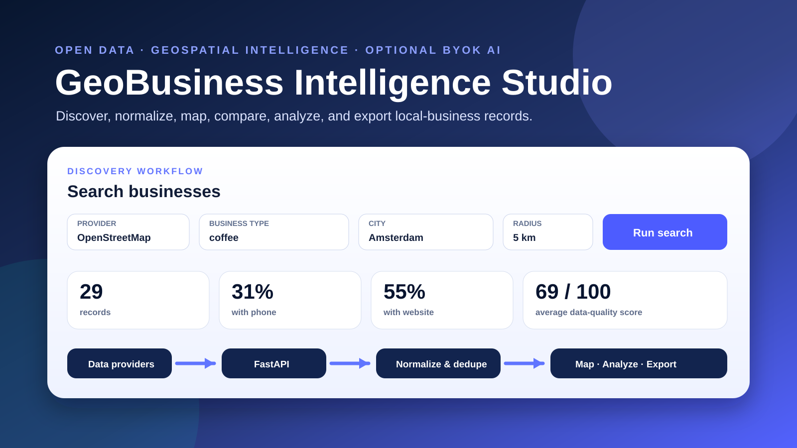

WEB
Hosted application
Open the full FastAPI dashboard in a browser. No local installation is required.
Open data · Geospatial intelligence · Responsible BYOK AI
Discover, normalize, deduplicate, map, analyze, and export local-business records through an inspectable FastAPI workflow.
Use it without a terminal
Open the full FastAPI dashboard in a browser. No local installation is required.
Download a self-contained executable that has been built and health-checked by GitHub Actions.
Inspect, test, extend, and deploy the documented source code.

Why this repository exists
Local-business records often arrive incomplete, duplicated, and inconsistent. The application converts provider-specific responses into a shared schema, preserves provenance, measures completeness, removes probable duplicates conservatively, maps results, and exports reusable data.
Use offline samples, OpenStreetMap, or optional Google Places.
Convert varied payloads into one explicit business model.
Score completeness, deduplicate, map, analyze, and export.
Community infrastructure protection
Nominatim and Overpass calls use request spacing, long-lived caches, simultaneous-request coalescing, stale fallback, client limits, production search caps, and replaceable provider URLs.
Guidebook and preservation
The responsive guidebook and A4 PDF explain the architecture, interface, data quality model, responsible-use boundaries, deployment paths, and research value.
Author

Faramarz Kowsari is an author, Software Engineer and AI researcher based in Istanbul. He works across Artificial Intelligence, prompt engineering, data-driven educational tools, algorithmic trading, classical literature, and mindfulness.